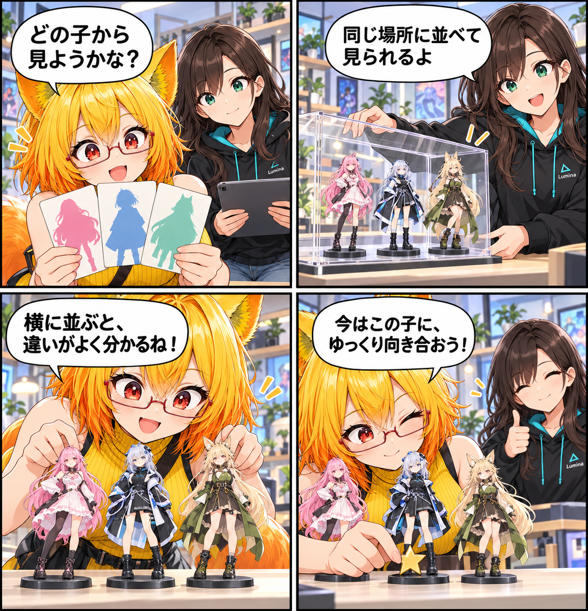

2026.10.24 / Development Log / Feature Spotlight
閑話休題：アバターを並べて、見比べる
今回は新しい実装実績ではなく、VRASで使える複数アバター表示を紹介します。VRM / VABアバターを同じ空間に並べ、横から見比べながら、今調整したい一体へ焦点を当てられる既存機能です。
今回は feature-spotlight（閑話休題） です。集計期間は2026-10-23 03:00:00 JSTから2026-10-24 02:59:59 JST、参照ブランチはViewerの
main です。集計終了時点のHEADは 0aacdb944e979003d5e43bced4baf7a2218c3e8b、期間内コミットは0件でした。未コミット差分は対象期間の実績と確認できないため含めず、現在実装済みの機能を紹介します。
同じ場所に、並べて見る
VRASでは、VRMとVABのアバターをライブラリから選んで読み込めます。読み込んだアバターは同じ空間に複数体表示できるので、切り替えだけでは気づきにくい輪郭や衣装、表情の印象も、横に並べて確かめられます。
比べながら、ひとりを選ぶ
複数体を表示していても、調整の対象は選択中の一体に絞られます。ほかのアバターを比較のために残したまま、いま向き合いたい一体の見た目を確認する、という使い方ができます。
ライブラリから、いつもの一人へ
アバターライブラリはVRMとVABを扱い、ユーザーのアバターと公式アバターを閲覧できる構成です。見比べる相手を増やしたいときも、次に確認したい一人を選ぶときも、同じ入口から始められます。
4コマの裏話
今回は、三枚のカードから始まり、三体を並べ、最後に一体へ小さな星印を添える寸劇にしました。比べるために並べることと、調整するために一人を選ぶことを、画面ではなく小さなフィギュアで表しています。
まとめ
VRASではVRM / VABアバターを読み込み、複数体を同じ空間へ並べて比較できます。そのうえで選択中の一体に焦点を当てられるので、全体を見渡す時間と、一人へ向き合う時間を行き来できます。
本日のひとこと
並べて初めて見える違いも、ある。